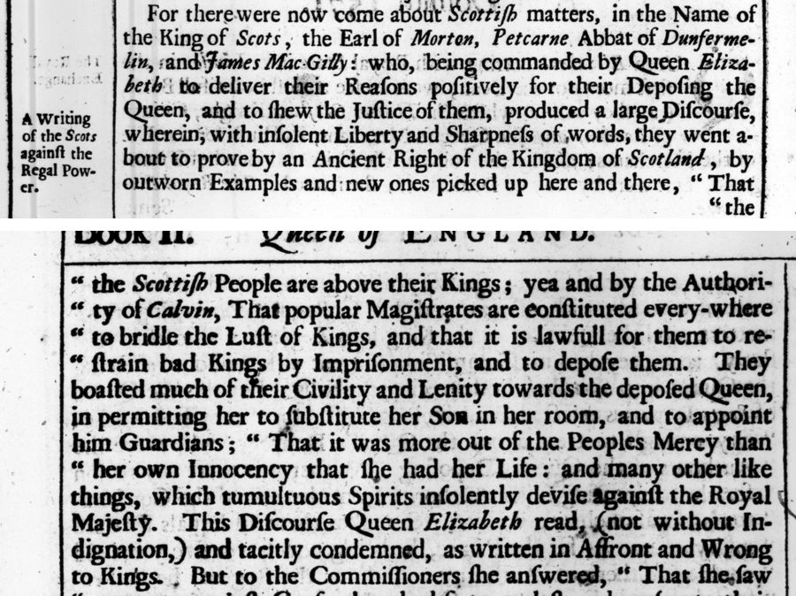

The Scots’ discourse against the royal power, 1571 (1688 English version, pp. 154–155)
English: London 1688, Book II, pp. 154–155, scans n171–n172; the margin note reads “A Writing of the Scots against the Regal Power.” Long s normalised. Highlighted: what Lecky reports.

For there were now come about Scottish matters, in the Name of the King of Scots, the Earl of Morton, Petcarne Abbat of Dunfermelin, and James Mac-Gilly: who, being commanded by Queen Elizabeth to deliver their Reasons positively for their Deposing the Queen, and to shew the Justice of them, produced a large Discourse, wherein, with insolent Liberty and Sharpness of words, they went about to prove by an Ancient Right of the Kingdom of Scotland, by outworn Examples and new ones picked up here and there, “That the Scottish People are above their Kings; yea and by the Authority of Calvin, That popular Magistrates are constituted every-where to bridle the Lust of Kings, and that it is lawfull for them to restrain bad Kings by Imprisonment, and to depose them.” They boasted much of their Civility and Lenity towards the deposed Queen, in permitting her to substitute her Son in her room, and to appoint him Guardians; “That it was more out of the Peoples Mercy than her own Innocency that she had her Life:” and many other like things, which tumultuous Spirits insolently devise against the Royal Majesty. This Discourse Queen Elizabeth read, (not without Indignation,) and tacitly condemned, as written in Affront and Wrong to Kings. …
Lecky (vol. II, ch. V, text at note 84): “she was immediately favoured in reply with a long dissertation on the manifest superiority of nations to their sovereigns; which, as Camden assures us, and as we can readily believe, she received with extreme indignation.” Camden says “not without indignation”, and adds that she condemned it only “tacitly”. The English here is the 1688 translation; Lecky read Camden’s Latin.
Further down the rabbit hole
Sources that Lecky cites in the notes next to the ones that cite this page.
- Buchanan, De jure regni apud ScotosBuchanan’s borrowed maxim about king and law
- Knox, The AppellationWhy the English should have put Queen Mary to death
- Macaulay, History of England and EssaysMacaulay on Puritans, bear-baiting and the servile Church
- An Homily against Disobedience and Wilful RebellionHell as the prison of rebels: the Church of England preaches obedience
- Buckle, History of Civilization in EnglandWeather and credulity, and the Scottish clergy’s Devil who had been studying for five thousand years
- Hallam, Literature of Europe and Constitutional HistoryHow Lecky quotes Hallam on persecution


Backlinks
Every place in Rationalism in Europe that links to this page (generated automatically when the site is built).
- Chapter V: note 84